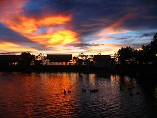

無料の画像素材をブログで使おう
テンプレートなどのデザイン的な目的で画像を利用するには、自分で撮って加工処理をするよりも、ネット上で公開されている素材サイトなどを利用するのが便利です。
有料の素材サイトで購入した方がクオリティーが高く、著作権などの面でも安心ですが、無料画像を公開しているサイトもけっこうな数があります。
ブログで使える無料画像を公開しているサイト
無料で使える画像共有サイトには次のようなサイトがあります。
- Flickr
- Open Photo
- クリエイティブ・コモンズ
EyesPic- リンクスタイル
このなかで「 EyesPic 」と「リンクスタイル」は日本のサイトですが、素材として使える無料画像と有料画像の2種類があり、フリーのものなら利用規約を読んでから使うことができます。
「 Flickr 」はヤフーが買い取ったメジャーな画像共有サイトのようなのですが、以前に何度か使ってみようと思ったものの、いまいちどの画像を使っていいのかわからなくてあきらめた記憶があります。英語がわかる方におすすめです。
このなかで、海外の「 openphoto 」にある画像には、きれいめのものが多いように思いますが、こちらも英語なんで著作権あれこれがよくわからないものが多いです。
どうも、画像の著作権には Attribution（帰属）とか Noncommercial といった感じで、画像使用上のいろいろな制限があるようなんです。
例えば、下の画像は openphoto にあったのですが、Attribution-NonCommercial といった感じになっているんで、「帰属関係上の著作者が誰であるかを明示した上で、非営利的なサイトで画像を使える」とのことです。

photo © Li Sun for openphoto.net CC:Attribution-NonCommercial
ほかにも、20セントぐらいで画像を購入できるサイトがあったりしますが、20円ぐらいなので、日本の画像販売と比較するとかなり安いのではないかと思います。
ちなみに、無料画像ではありませんが、わたしがホームページ用などに実際に購入しているのは Fotolia というサイトからです。
ブログ向きではないですが、数百円程度でクオリティーの高い画像がたくさんあるので、商用ホームページを作成している場合におすすめです。
シーサーブログでのテンプレート用の無料画像
ちなみにシーサーブログでのテンプレート用の背景画像ですが、フォトライブラリーでの画像はシーサーブログでテンプレートとして使う分には無料で使用できるものが多いです。
画像の範囲を選択して、位置などを入力すれば、自動的にブログテンプレートのスタイルシートが作成されるので、楽チン簡単です。
ブログ背景画像の作り方としては、グラデーション素材を使用してスタイルシートに組み込む方法とか、無料素材の壁紙配布サイトからもらってくるとか、フォントをダウンロードしてのキャプチャー画像などいろいろあります。
記事中に画像やアイコンをうめこんで記事を作成すると、多少ページビューがアップするようですので、無料画像素材をブログで利用しながらブログ更新していけばいい感じなんじゃないかなって思います。
Flickrについてはまた今度調べる予定です。
- ブログのタイトルバナー画像の作り方
ブログ名やサイト名などブログの顔になるタイトルバナーですが、アイコンや画像を作成しておしゃれバナーを作成している人が多いようです。このブログでもいちおうはタイトルバナーをフッターに画像として作っている... - 無料ブログにアイコン追加で記事作成
無料ブログで記事を作成するときに画像を挿入しているブログもときどき見かけます。記事タイトルの直下に挿入しているブログや簡単でシンプルなアイコンを挿入しているところもあったりとさまざまです。 - シーサーブログのヘッダー画像のカスタマイズ
シーサーブログ(seesaa blog)で壁紙の背景画像が簡単に変えられるようなのでちょっとカスタマイズしてみました。テンプレート一覧のところにいつもあったフォトライブラリーというリンクですが、ここの... - ＨＰグラデーション無料素材のブログ
以前にグラデーションな背景画像の作り方という記事を書いていたんですけど、最近、ホームページやブログの背景素材用のグラデーション素材サイトを作成してみました。同じようなブログのテンプレートでも、スタイル... - キャプチャー画像の作り方
初めてブログを作成する際、初心者さまにとってキャプチャー画像の作成を簡単にできると、とってもお役立ちなのではないかなと思います。 キャプチャー画像っていうのは、スクリーンショットとも呼ばれていますが... - キャプチャー画像をブログへ貼付方法
以前の記事でキャプチャー画像の作り方について書いていたのですが、今度はそのキャプチャーした画像の加工方法について調べてみたいと思います。さらに、画像をブログへ貼付する際の html タグは &... - 写真集の作り方
最近は個人でも簡単に写真集を作成できる時代になりました。写真集の作り方といってもとっても簡単で、ネット上に写真をアップロードしたあと、レイアウトや文字などをあれこれして注文すれば、２週間後には製本され...